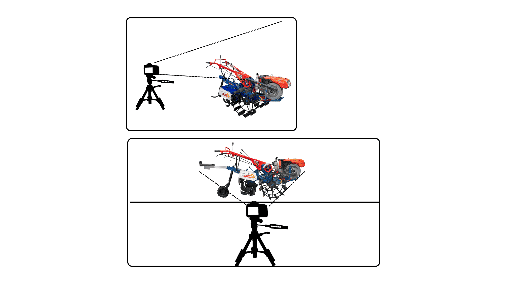

Keterangan Video
- Footage Stabil: Pastikan menggunakan stabilizer atau tripod agar video tidak goyang.
- Minimal Gerakan: Hindari zoom atau pan yang terlalu cepat.
- Objek di Tengah: Pastikan unit traktor selalu berada dalam frame tengah.
- Fokus Objek: Pastikan kamera mengunci fokus pada mesin dan tanah yang diolah.
- Video Jernih: Rekam dengan resolusi minimal 1080p agar detail terlihat jelas.
Panduan Sudut Pandang
Fokus pada Medium Angle: Kamera sejajar dengan traktor dan operator.
